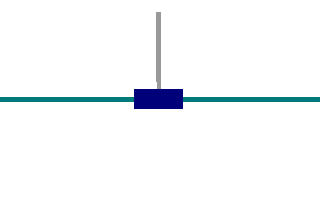

Kubric is an open-source Python framework that interfaces with PyBullet and Blender to generate photo-realistic scenes, with rich annotations, and seamlessly scales to large jobs distributed over thousands of machines, and generating TBs of data. Kubric can generate semi-realistic synthetic multi-object videos with rich annotations such as instance segmentation masks, depth maps, and optical flow.
We are developing a new differentiable simulator for robotics learning, called Tiny Differentiable Simulator, or TDS. The simulator allows for hybrid simulation with neural networks. It allows different automatic differentiation backends, for forward and reverse mode gradients. TDS can be trained using Deep Reinforcement Learning, or using Gradient based optimization (for example LFBGS). In addition, the simulator can be entirely run on CUDA for fast rollouts, in combination with Augmented Random Search. This allows for 1 million simulation steps per second.
Tiny Differentiable Simulator training a policy using ARS simulation in CUDA
You can directly try out PyBullet in your web browser, using Google Colab. !pip install pybullet takes about 15 seconds, since there is a precompiled Python wheel.
Here is an example training colab a PyBullet Gym environment using Stable Baselines PPO:

It is also possible to use hardware OpenGL3 rendering in a Colab, through EGL. Make sure to set the MESA environment variables. Here is an example colab.
Also tagged a github release of Bullet Physics and PyBullet, both version 3.05. The release was used for our motion imitation research, and also includes various improvements for the finite-element-method (FEM) deformable simulation, by Xuchen Han and Chuyuan Fu .
Assistive Gym leverages PyBullet for physical human-robot interaction and assistive robotics. Assistive Gym currently supports four collaborative robots and six physically assistive tasks. It also supports learning-based control algorithms, and includes models of human motion, human preferences, robot base pose optimization, and realistic pose-dependent human joint limits
Paper Link: https://ras.papercept.net/proceedings/ICRA20/1572.pdf Zackory Erickson, Vamsee Gangaram, Ariel Kapusta, C. Karen Liu, and Charles C. Kemp, “Assistive Gym: A Physics Simulation Framework for Assistive Robotics”, IEEE International Conference on Robotics and Automation (ICRA), 2020.
In “Learning Agile Robotic Locomotion Skills by Imitating Animals”, we present a framework that takes a reference motion clip recorded from an animal (a dog, in this case) and uses RL to train a control policy that enables a robot to imitate the motion in the real world. By providing the system with different reference motions, we are able to train a quadruped robot to perform a diverse set of agile behaviors, ranging from fast walking gaits to dynamic hops and turns. The policies are trained primarily in simulation, and then transferred to the real world using a latent space adaptation technique that can efficiently adapt a policy using only a few minutes of data from the real robot. All simulations are performed using PyBullet.
Become the squishy glowing creature you’ve always wanted to be. Take control of the worlds inhabitants to solve puzzles. Overthrow the Mastermote! Check it out at https://store.steampowered.com/app/791240/Lumote
Facebook AI Habitat is a new open source simulation platform created by Facebook AI that’s designed to train embodied agents (such as virtual robots) in photo-realistic 3D environments. The latest version adds Bullet Physics.